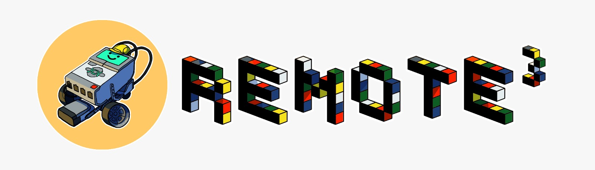
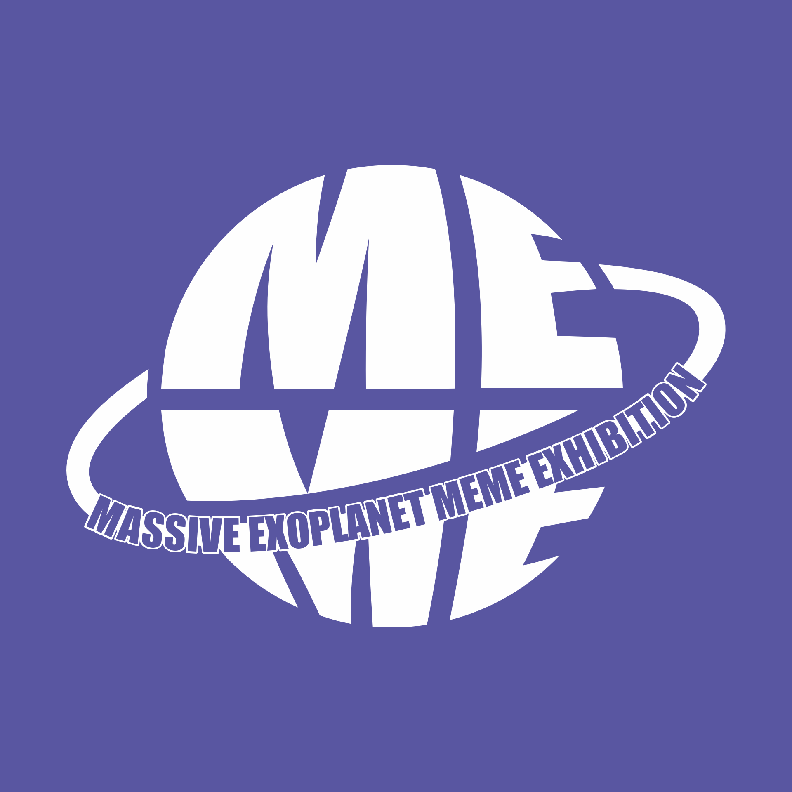

Remote3 is a UKRI funded outreach project with the aim of inspiring secondary school pupils to pursue STEM subjects while having fun. Teams of school pupils design, build, and program Lego Mindstorm robots to undertake a series of challenges in the Boulby Mars Yard, which is a Martian terrain analog.
In 2025/26, I was a mentor for two teams of pupils from a school on the outskirts of Glasgow, Scotland. I supported, alongside school teachers, the pupils in designing and programming the Lego Mars rovers to tackle the set challenges.

The Massive Exoplanet MEME Exhibition (MEME) is an outreach project focusing on communicating science and academic life in a fun way through the use of memes. We host an annual online exhibition to show case all the memes which have been submitted through the year. At the exhibition we organise for expert guest speakers to come and present on their work and outreach experience.
As an avid user of memes in my daily life, I had been submitting to the MEME for several years before joining as a co-organiser in 2025. Since then, I have been co-responsible for our online social media presence, running events at conferences (e.g., Exoclimes VII), and hosting the YouTube livestream for the online exhibition.
If you are as excited by this as I am, submit some memes for the exhibition HERE and follow us on social media HERE!
